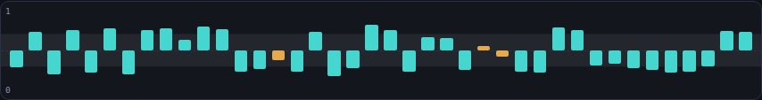

Real galleries are never white or black: the walls are a mid-tone, the placards are paper, the display cases are dark and lit from within. This theme is that building. The page ground is true putty — the literal in-between — prose sits on paper labels, and darkness is spent only where luminous data earns it: charts, demos, thumbnails, verdicts.
WALL #A8A296 (ink 5.9:1) · PLACARD #F7F5EF (ink 13.9:1) · VITRINE #131720 (cyan 10.4:1) — every ratio AA-computed

A sealed answer read through noise — the whisper beats the shout.
One capture pass photographs all 45 demos mid-run; the landing becomes a hung gallery.
We asked a quantum computer questions the textbooks call impossible.
Prose lives on paper, the way you read it in a gallery. Accents on paper are deep — teal and rust, engraving colors — never the luminous cyan, which belongs to the instruments behind glass.
measured on silicon · ≥72σ beyond every ordered strategy · every number a job ID
▶ Fire shots — the shout dies, the whisper survives
Zone rules: luminous accents (cyan/amber/good/bad) appear ONLY on vitrine surfaces. Paper accents are deep (teal/rust). Wall carries ink signage only. Ratios per WCAG 2.x; gate script tools/contrast-check.js.